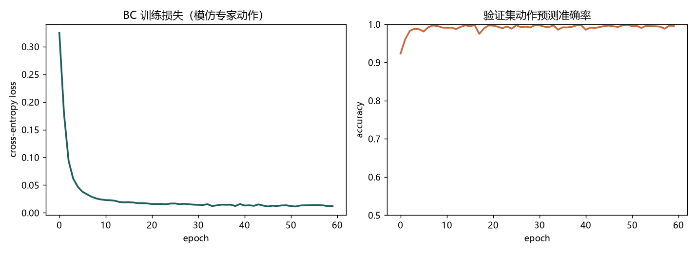

用行为克隆（Behavior Cloning）把"学策略"变成一个监督学习问题： 给定示教的 (状态 → 动作) 数据，让神经网络去拟合这个映射。这是从 RL 走向真实机器人的 入门路径，也是 LeRobot / OpenVLA 这类示教策略的底层范式。下面先用一个小画布给点直觉， 再放我用 PyTorch 实现的 BC 真实结果。
在 MuJoCo / Isaac 仿真中用键盘或遥操作录制轨迹（状态, 动作）对。
轨迹清洗、归一化、切分训练/验证集。LeRobot 提供标准数据格式。
用 MLP / Transformer 拟合动作分布，最小化交叉熵 / MSE。
加载策略在新轨迹上 rollout，看成功率与误差累积，分析分布漂移。
在下面画布上从左到右点几个点（模拟人操作轨迹），然后点"开始模仿"，看一条平滑曲线拟合你的示教。 这就是 BC 的核心：从 (状态→动作) 对中学习一个映射。
用一个手写 PD 控制器当"示教者"，在 CartPole 上采了 14.7 万条 (状态 → 动作) 演示，再用一个 MLP 以交叉熵去模仿它。验证集动作预测准确率 99.6%；克隆出的策略在环境里 rollout 平均存活 485 步，和示教者基本一致。

行为克隆是机器人学习最朴素也最实用的范式—— OpenVLA、RT-2 这些大模型策略本质上都是大规模 BC。 我要理解它的局限：分布漂移（covariate shift） ——模型在训练分布外会越走越偏。
跟随 LeRobot 官方课程推进，先在仿真里复现一个简单任务（推方块）， 再理解为什么需要 DAgger 这类改进。